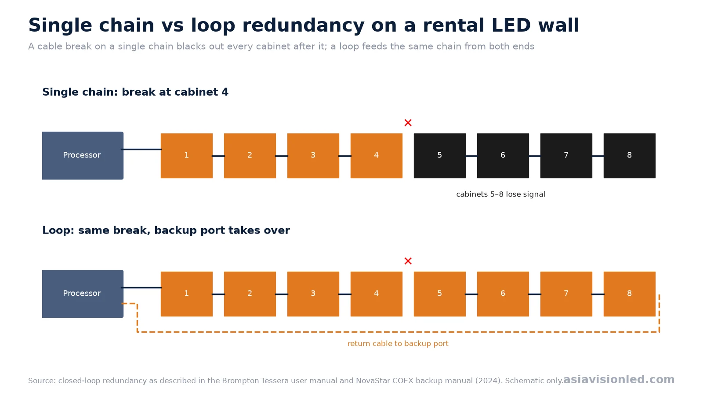
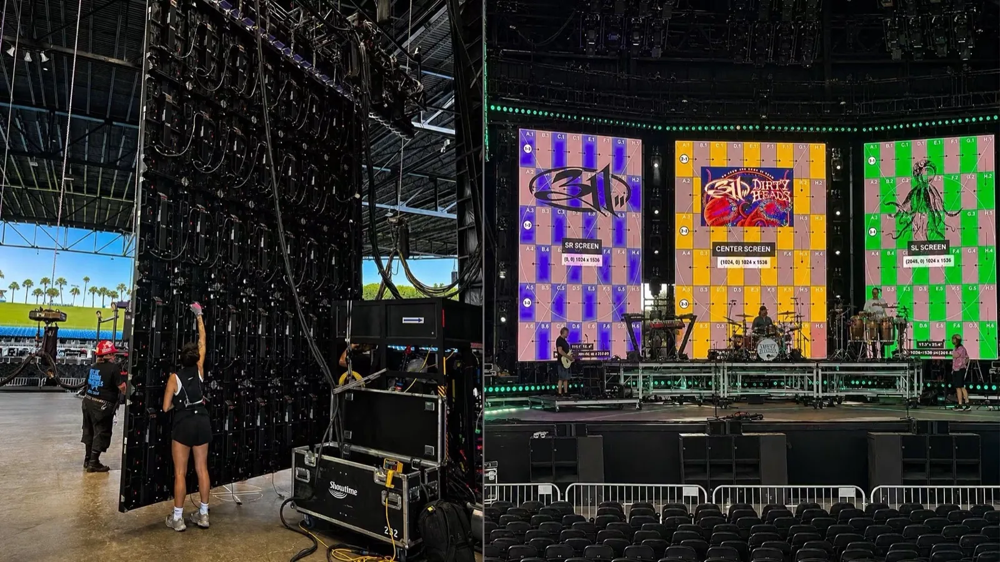

On a live show the LED wall has one job that matters more than image quality: it must not go dark. A keynote, an award show or a headline concert gets one chance, and the audience notices a black section of screen more than any colour shift. Redundancy is how rental companies and production managers buy that certainty. It is also easy to over-buy, under-buy, or buy in the wrong place.
This guide breaks a show system into the parts that can fail, explains what each type of backup protects, and shows how to prove the backup works before doors open. For cabinet choice itself, see our rental cabinet selection guide.
A useful way to plan, recommended in several redundancy guides, is to trace the show from content to pixel and ask what happens if each part fails:
| Possible failure | Typical protection | What it does not cover |
|---|---|---|
| Playback server or laptop | Second source on standby, switcher | A wrong export copied to both machines |
| Data cable or processor port | Loop (closed-loop) cabling | A failure of the whole processor |
| LED processor | Backup processor with failover | Shared source, distribution or power |
| Receiving card in a cabinet | Dual receiving cards or a fast swap | Module or power supply faults |
| Module or cabinet power supply | Spares and a trained tech on site | Time to reach the cabinet during the show |
| Mains supply | Separate circuits, generator, UPS for control gear | LED load itself rarely sits on UPS |
The last column is the point. Each backup covers one part of the chain. Two playback machines still depend on how their signals reach the processor. A backup processor is no use if its mapping belongs to another wall.
On a normal cabinet chain the signal enters the first cabinet and hops from one to the next. A broken cable mid-chain blacks out everything after it. Loop redundancy adds a return cable from the last cabinet back to a second processor port, so the chain can be fed from either end.
Figure 1 shows the difference.

What the processor makers document:
The cost is capacity. A loop uses a second port for the same cabinets, so as one guide puts it, the processor's usable capacity is roughly halved and the port count roughly doubles. Include that in the processor count when you quote the job.
Loop cabling does nothing if the processor itself dies. The next layer is a second processor that can take over.
Read the changeover behaviour closely. Brompton's manual states that processor failover is available on the SX40 and that fixtures lose video momentarily while they reconnect to the backup. NovaStar notes that in its backup modes the backup device takes its parameters from the primary, and its guidance for dual receiving-card backup is to make the two configurations identical in topology, brightness and settings. "Redundant" does not always mean "invisible", so put the expected behaviour in writing.
Our processor buying guide covers bandwidth and latency, which also change when you add redundancy.
Many show failures start upstream of the LED system: a crashed playback machine, a dropped input, a switcher fault. Run primary and backup media servers on the same timecode, feeding a switcher that the operator can cut on cue. Check that both machines hold the same, final export. Two copies of a wrong file protect nothing.
LED walls draw too much power to sit on a UPS in most rental setups, but the control gear can. Put processors, switchers and servers on a UPS. Split the wall across several circuits so one tripped breaker takes out a section, not the whole screen. Where a generator feeds the show, size it for the screen's switch-on inrush and its full-brightness load; our power distribution guide explains the sums. Some fixed-install products carry dual power supplies per cabinet, while rental cabinets usually rely on fast swaps and spares.
Redundancy eventually comes down to a technician with the right part in reach. Bring spare modules, receiving cards and power supplies matched to the batch on the wall, and keep them where they can be reached during the show. Make sure at least one crew member can swap them without the system tech. Our spare parts inventory guide and crew training guide cover both sides.
Figure 2 shows the back-of-house side of a show: rear access to the wall, flight cases and the working area where spares and processing live.

A backup that has never been tested is a hope, not a plan. During the technical rehearsal, with the real content running:
Not every job needs every layer. A product launch with a single keynote may justify full source, processor and loop redundancy, because there is no second chance. A multi-day exhibition wall may need only loop cabling and good spares, because a short repair is acceptable. Broadcast and televised events sit at the top of the scale, because a failure is recorded. Agree the level with the client, price it as a line item, and make it part of the rental contract.
Our rental range includes COB Z (flip-chip COB, P1.95 and P2.6, at least 7680 Hz), COB ZH (touring COB at 4000 nits, wind-rated to 20 m/s), E-PRO for XR and high-end rental, and the S Series, which runs indoor and outdoor models on one control system. For fixed rooms that cannot go dark, RH-PRO carries dual power, dual receiving cards and dual signal paths. Tell us your processor platform and backup plan, and we will match the receiving cards and spares package to it. Every panel carries a 3-year warranty with 18-day factory dispatch.
Building or upgrading a rental fleet? Tell us your typical show sizes and processor platform. We will recommend panels, receiving cards and a spares package that fit your redundancy plan. Request a quote.